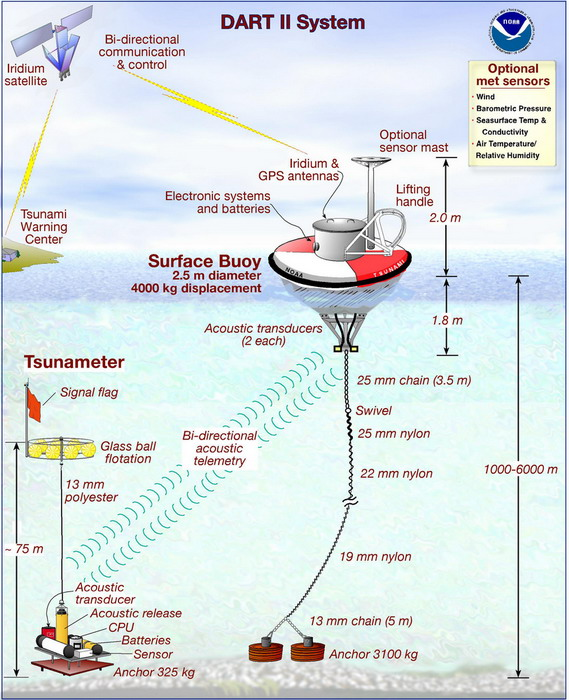

A tsunami is a train of long-period gravity waves generated when a large volume of water is displaced impulsively, most often by vertical motion of the seafloor during a subduction-zone earthquake, but also by submarine and subaerial landslides, volcanic eruptions and flank collapses, moving atmospheric pressure disturbances and, very rarely, bolide impacts. What sets tsunamis apart from wind waves is scale: wavelengths of tens to hundreds of kilometres, periods of roughly five minutes to over an hour, and the involvement of the entire water column from surface to seabed. In the deep ocean an earthquake tsunami may be less than a metre high and pass unnoticed beneath a ship, yet it carries enough energy across an ocean basin to flood coastlines thousands of kilometres from its source.
The modern science of tsunamis is barely seventy years old as an organised discipline. The 1946 Aleutian tsunami, which killed about 160 people in Hawaii nearly five hours after the earthquake, led directly to the first operational warning system in 1949. The 1960 Chile and 1964 Alaska earthquakes established that great tsunamis are produced by megathrust ruptures on subduction zones. The 2004 Indian Ocean catastrophe, with roughly 230,000 dead, exposed the absence of warning infrastructure outside the Pacific, while the 2011 Tōhoku tsunami showed that even the best-prepared nation could be overwhelmed when a hazard assessment underestimated the largest possible event. More recent events, such as the 2018 Palu and Anak Krakatau tsunamis and the 2022 Hunga Tonga–Hunga Haʻapai eruption, have pushed attention towards non-seismic and atmospheric sources that conventional warning systems were not designed to detect.
This course treats tsunamis as a problem in geophysical fluid dynamics, seismology, observation, engineering and risk governance. It assumes familiarity with calculus, basic fluid mechanics and elementary seismology. Equations are given in SI units with g = 9.81 m/s² and seawater density ρ ≈ 1,025 kg/m³ unless otherwise stated. Death tolls and physical parameters for historical events are frequently uncertain; where reputable sources disagree, ranges are given.
In this course, you will:
- 1.Derive the long-wave (shallow-water) approximation, the speed c = √(gh), and the conditions under which dispersion matters
- 2.Relate earthquake source parameters (seismic moment, slip, fault geometry) to the initial sea-surface displacement and tsunami energy
- 3.Compare the physics of landslide, volcanic, meteorological and impact tsunamis with seismic tsunamis, including tsunami earthquakes
- 4.Describe how tsunamis are propagated numerically and how travel-time and maximum-amplitude maps are produced
- 5.Apply Green's law, refraction and resonance concepts to explain amplification near coasts and in harbours
- 6.Estimate run-up, inundation flow depths and hydrodynamic loads on structures
- 7.Use tsunami magnitude and intensity scales and the basics of probabilistic tsunami hazard analysis
- 8.Explain how seismic networks, DART bottom-pressure recorders, tide gauges, cabled observatories and GNSS feed into warning centres
- 9.Evaluate inundation mapping, evacuation planning, vertical evacuation structures and coastal defences
- 10.Interpret paleotsunami deposits and apply the lessons of historical case studies
Figures


Contents
Long-Wave Theory and Tsunami Speed Lesson 2
Earthquake Generation and Seafloor Deformation Lesson 3
Tsunami Earthquakes and Non-Seismic Sources Lesson 4
Propagation Modelling and Travel-Time Maps Lesson 5
Shoaling, Refraction and Resonance Lesson 6
Run-Up, Inundation and Forces on Structures Lesson 7
Magnitude, Intensity and Probabilistic Hazard Lesson 8
Detection, Forecasting and Warning Centres Lesson 9
Risk Reduction, Evacuation and Coastal Engineering Lesson 10
Paleotsunamis and Open Research Questions Case Studies
8 major events analysed References
25 sources for further reading
Image sources
- Figure 1 · 2011Sendai-NOAA-Energy plot20110311. By NOAA. Public domain. From Wikimedia Commons: https://commons.wikimedia.org/wiki/File:2011Sendai-NOAA-Energy_plot20110311.png
- Figure 2 · DART II System Diagram. By Pacific Marine Environmental Laboratory (NOAA). Public domain. From Wikimedia Commons: https://commons.wikimedia.org/wiki/File:DART_II_System_Diagram.jpg